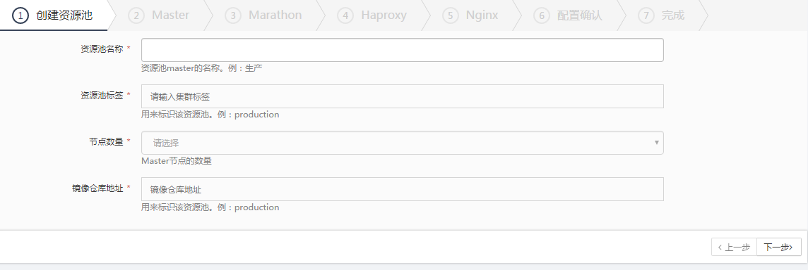
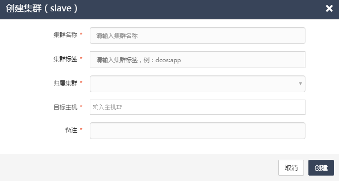

集群管理
功能介绍：集群管理界面主要为用户提供DCOS系统中所有集群的概要信息。
集群列表
在集群列表中，展示了每一个集群的集群名称、集群类型、标签、节点数量、所属资源池、创建人、状态、创建时间等信息。图2.3.1
图2.3.1
删除集群： 当用户在集群列表中选中master资源池后，点击操作下的“删除”按钮后，系统会检查该资源池中是否有应用运行，如果有则不允许删除该资源池；当用户选中slave集群后，点击操作下的“删除”按钮后，系统会检查该集群中是否有应用运行，如果有则不允许删除该集群。
空闲主机列表
在空闲主机列表中，展示了每一个空闲主机的主机IP、CPU（核）、内存（GB）、磁盘空间（GB）、创建时间等信息。图2.3.2-1
图2.3.2-1
添加主机-单台添加：在空闲主机列表中，点击“添加主机”按钮，可以选择“单台添加”或者“批量添加”。点击“单台添加”按钮后，系统弹出主机IP的输入框，用户输入主机IP与备注信息后，点击确认按钮，即可添加一台主机。图2.3.2-2
图2.3.2-2
添加主机-批量添加：点击“批量添加”按钮后，系统弹出批量添加主机的弹窗，在弹窗中点击“选择上传文件“按钮后，在本地文件中选择用户需上传的txt文件（上传文件格式需符合平台要求），上传完成后，点击确定按钮，系统即可将txt文件中的所有主机添加进空闲主机列表。图2.3.2-3
图2.3.2-3
空闲主机列表搜索：用户在空闲主机列表的“search”框中输入主机信息后，主机列表中即可显示出所有匹配该信息的主机。
Master资源池
用户在集群列表中点击master类型的集群名称后，进入Master资源池信息页面。页面中展示了集群的集群名称、运行状态、健康主机、异常主机、集群类型、主机数量、管理节点数量、创建时间等信息。图2.3.3-1
图2.3.3-1
Master资源池-性能监控：在页面下方的性能监控页面，展示了matser资源池的容器平均CPU、容器平均内存、ZK连接数这三个统计图（以下以容器平均CPU和容器平均内存为例）。图2.3.3-2
图2.3.3-2
Master资源池-主机列表：在页面下方的主机列表页面，展示了所有组件的服务类型、标签名称、主机IP、端口等信息。图2.3.3-3
图2.3.3-3
添加组件-Marathon：用户在主机列表中点击“添加组件”按钮后，系统弹出添加Master资源池组件的弹窗，当选择组件为“Marathon”时，需输入主机IP、端口、MarathonID等信息，输入完成后，点击“添加”按钮，即可在Master资源池中添加一个Marathon组件。图2.3.3-4
图2.3.3-4
添加组件-HaProxy：用户选择添加组件为“Haproxy”时，需输入主机IP、服务端口、状态端口、Marathon地址、Bamboo端口、HaproxyID等信息，输入完成后，点击“添加”按钮，即可在Master资源池中添加一个HaProxy组件。图2.3.3-5
图2.3.3-5
添加组件-Nginx用户选择添加组件为“Nginx”时，需输入主机IP、上传端口、下载端口等信息，输入完成后，点击“添加”按钮，即可在Master资源池中添加一个Nginx组件。图2.3.3-6
图2.3.3-6
删除组件根据系统设计与要求，zookeeper、mesos-master组件不得删除；Nginx可以正常删除（当Master资源池中只剩一个Nginx时，则不得删除）；marathon可以正常删除（当marathon上还有应用运行时，请确认是否删除，确认后，可以继续删除）；haproxy可以正常删除。
弹性扩缩启停：根据平台设计，系统中以单个marathon组件和一个集群为单位，提供弹性扩缩一键启停功能。
弹性扩缩升级：根据平台设计，系统中以单个marathon组件和一个集群为单位，提供弹性扩缩一键升级功能。图2.3.3-7
图2.3.3-7
主机列表搜索：在主机列表的“search”框中输入主机信息后，主机列表中即可搜索出所有匹配该信息的主机。
Slave集群
用户在集群列表中点击slave类型的集群名称后，进入slave集群信息页面。展示了集群的集群名称、运行状态、健康主机、异常主机、集群类型、主机数量、管理节点数量、创建时间等信息。图2.3.4-1
图2.3.4-1
Slave集群-性能监控：在页面下方的性能监控中，可以查看slave集群的容器平均CPU、容器平均内存趋势图。图2.3.4-2
图2.3.4-2
Slave集群-主机列表：在页面下方的主机列表中，展示了每个主机的服务类型、标签名称、主机IP、端口等信息。图2.3.4-3
图2.3.4-3
主机列表-添加组件：点击主机列表的”添加按钮“后，系统弹出添加主机的弹窗，用户需选择一个或多个主机，选择主机完成后，点击”添加“按钮后，即可在这个slave集群中添加选择的主机。图2.3.4-4
图2.3.4-4
主机列表-删除组件：在主机列表中，选中一个slave主机后，点击操作下的“删除组件”按钮后，系统可以正常删除slave主机（当该slave集群中只剩一个slave主机时，如果删除，应用将无法正常运行，不得删除）。
创建资源池
创建资源池第1步：用户在集群管理列表中，点击“创建资源池”按钮后，系统弹出创建资源池的弹窗，在第1步“创建资源池”中，用户需输入资源池名称、资源池标签、选择节点数量、镜像仓库地址等信息，输入完成后，点击“下一步”按钮。图2.3.5-1

图2.3.5-1
创建资源池第2步：用户进入创建Master页面，需选择Matser主机IP，选择完成后，点击“下一步”按钮。图2.3.5-2

图2.3.5-2
创建资源池第3步：用户进入创建Marathon页面，需选择目标主机，输入端口、MarathonID等信息，点击“添加目标主机”按钮，可以再添加一个或多个Marathon组件，Marathon信息输入完成后，点击“下一步”按钮。图2.3.5-3
图2.3.5-3
创建资源池第4步：用户进入创建Haproxy页面，需选择目标主机，输入服务端口、状态端口、BamBoo端口、选择Marathon地址、输入HaproxyID等信息后，可以点击”添加目标主机”按钮，添加一个或多个Haproxy组件，输入信息完成后，点击“下一步”按钮。图2.3.5-4
图2.3.5-4
创建资源池第5步：用户进入创建Nginx页面，需选择目标主机，输入上传端口、下载端口端口后，可以点击”添加目标主机”按钮，添加一个或多个Nginx组件，输入信息完成后，点击“下一步”按钮。图2.3.5-5
图2.3.5-5
创建资源池第6步：用户进入配置确认页面，页面中展示了Master、Marathon、Haproxy、Nginx组件的配置信息，用户检查信息无误后，可以点击“创建”按钮，系统即开始创建Master资源池。图2.3.5-6

图2.3.5-6
创建slave集群
创建资源池第1步：用户在集群管理列表中，点击“创建集群（slave）”按钮后，系统弹出创建slave集群的弹窗，用户需输入集群名称、集群标签、归属集群、目标主机、备注等信息后，点击”创建”按钮，系统即开始创建一个slave集群。图2.3.6

图2.3.6